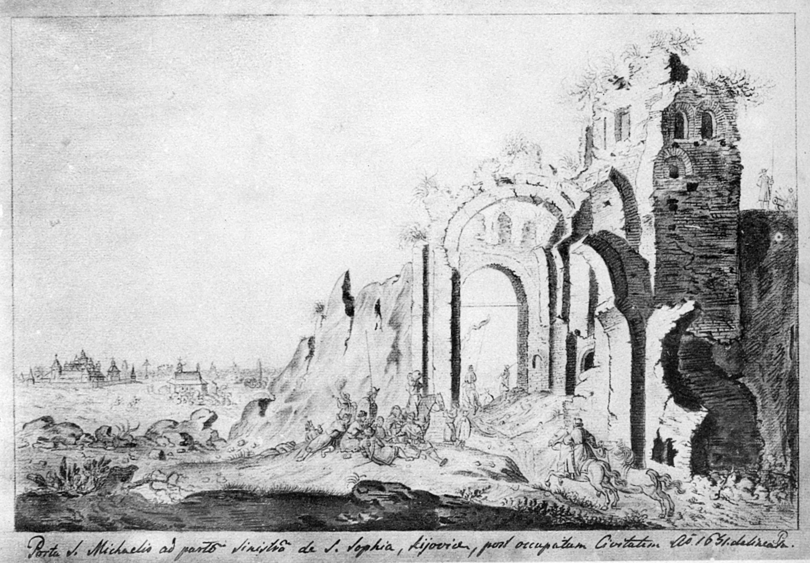
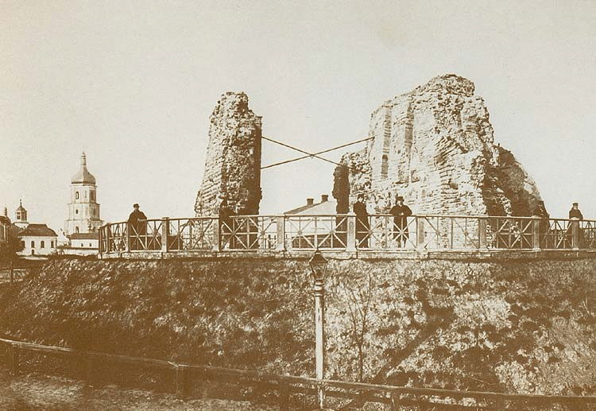

Золоті ворота

Спорудження та архітектура
Найбільш вірогідна дата спорудження воріт 1017–1024 рр. Тому, що на 1037 рік уже є записи про спорудження багатьох будівель «міста Ярослава»: Золоті ворота, Софійський собор, церква Святої Ірини та інші. За один рік стільки будівництв не могло б бути виконаним, адже Київ був заселеним не дуже густо (30 000 людей). Можливо, що в літописі згадується будівництво за останні майже 30 років перед 1037 роком, тоді Золоті ворота могли з'явитися і за часів Володимира Святославовича. Перша згадка про Золоті ворота Києва міститься 1018 року у польській хроніці Аноніма Галла (початок ХІІ ст.). У ній розповідається про війну за владу Святополка, якого підтримував тесть — польський князь Болеслав I Хоробрий — з Ярославом Мудрим. 14 серпня 1018 року вони взяли Київ і Болеслав ударив мечем об Золоті ворота на знак захоплення міста. Від удару меч вищербився, звідси його назва — «Щербець». Потім цей меч зберігався у Гнезні (першій столиці Польського королівства) і став одним із символів Польщі. Захист «міста Ярослава» полягав і у використанні наявних природних перешкод — схили гір, яри, болота. Золоті ворота були споруджені у місці, де незначний перепад висот потребував додаткових укріплень — неподалік було поле, що робило цю територію більш вразливою для ворогів. Цей в'їзд до міста був парадним, а отже й найбільш важливими — через ці ворота прибували до міста посли інших держав[. Тому тут були подвійні оборонні рови. Це була бойова башта із проїздом, із надбрамною церквою. Система укріплень тогочасного Києва мала троє воріт Золоті, Лядські та Жидівські (Львівська брама). Кам'яними були тільки Золоті і для свого часу були неприступними — жодної згадки про вторгнення через них не було зафіксовано, навіть хан Батий не пробував брати місто через них, а зосередив свої сили біля Лядських воріт та фортифікацій Хрещатої долини. На фасаді Золотих воріт мало бути зображення Богородиці — ймовірно фреска чи мозаїка. Про існування цього зображення свідчить літописний запис від 1151 року, у якому було згадано переговори Ізяслава Мстиславовича з послом Юрія Долгорукого поблизу Золотих воріт і те, що Великий князь озирнувся на святу Богородицю і сказав: « А їй нас судити, Пречистій Владичиці, із Сином своїм і Богом нашим, у сей вік і в будучий « Це зображення не збереглося. У 2016 р. на фасаді павільйона-реконструкції воріт з боку міста встановлено сучасну мозаїчну ікону «Богородиця Нікопея». Автор — худ. Л. Тоцький, наук. консультант — д.і.н. Н. Нікітенко.
Історія пам'ятки
Золоті ворота були одними з трьох великих міських воріт, споруджених при Ярославі Мудрому. Будівництво воріт разом із Софійським собором згадується в «Повісті временних літ» у 1037 р. Золоті ворота не згадуються у писемних джерелах у період після грудня 1240 року (монгольська навала) до XVI століття. Джерела XVI—XVII століть уже свідчать, що ворота перебувають у напівзруйнованому стані. Мартін Ґруневеґ, львівський купець та мандрівник, писав 1584 року: « Золоті ворота ще стоять, але переважна частина їх поруйнована… « Про це свідчать і малюнки голландського художника Абрагама ван Вестерфельда (1651). Золоті ворота за його часів ще мали арки, у проїзду було склепіння й збереглися рештки надбрамної церкви. Відомо, що у 1648 році саме біля Золотих воріт вітали Богдана Хмельницького після перемоги над польським військом. Зважаючи на потребу захисту Києва від ворогів — спершу поляків, потім турків — у середині XVII ст. почалася реконструкція фортифікаційних споруд міста. Вали ввійшли до основи Старокиївської фортеці — дерев'яні оборонні споруди розібрали, земляні вали досипали і встановили гармати на верхніх майданчиках. Перед Золотими воротами було збудовано земляні бастіони й у них розмістили гарнізонну варту. Таким чином Золоті ворота служили для захисту міста у складі фортеці до середини XVIII століття, коли їх було визнано як небезпечні й засипано землею, щоб уберегти від руйнування. З 20-х років XIX століття розпочалося археологічне дослідження Києва. Розкопку Золотих воріт було проведено у числі перших, і здійснено це було «складчиною з любителів священних старожитностей» (за підпискою). Оскільки 1832 року царем Миколою I руїни пам'ятки було визнано як «варті збереження», на їхні розкопки почали виділяти державні кошти із 1833 року. Дозвіл на археологічні розкопки надав київський генерал-губернатор Василь Левашов, а ініціатором виступив Кіндрат Лохвицький, археолог-аматор і чиновник з особливих доручень при генерал-губернаторові.  Стан воріт значно погіршився за час перебування під землею. Було розкрито дві паралельні стіни, довжина яких становила 25 метрів (східний пілон) і 13 метрів (західний), а висота була близько 8 метрів. Сім пар пілястр було нараховано на внутрішніх поверхнях стін проїзду, а простір між пілястрами було прикрашено невеликими двоступінчастими нішами. Мурування воріт є схожим до Софійського собору — було використано змішану техніку («opus mixtum»), коли чергуються різні за розміром природні камені з рядами цегли (плінфи). 25 червня 1834 року (на день народження імператора) відбулося урочисте відкриття Золотих воріт — вони були освячені і «вілюміновані». Для збереження пам'ятки були потрібні заходи. Протягом 1835—1836 рр. верхню частину стін було залито вапняним розчином, а на руїни поклали дерен. 1837 року інженер Ф. Мєхович звів контрфорси біля східної стіни і з'єднав стіни залізними в'язями із кільцями. Згодом провадилися роботи з укріплення руїн: на окремих ділянках зроблено ремонт стародавньої кладки, зведено контрфорси, влаштовано металеві зв'язки, територію навколо залишків пам'ятки оточено чавунною огорожею. У такому вигляді Золоті ворота дійшли до нашого часу. Однак від атмосферних опадів пам'ятка руйнувалася й далі, що надзвичайно непокоїло вчених. У 1970-ті роки було прийнято рішення звести над залишками павільйон, який не тільки захищав би їх, а й відтворював первісний вигляд споруди.